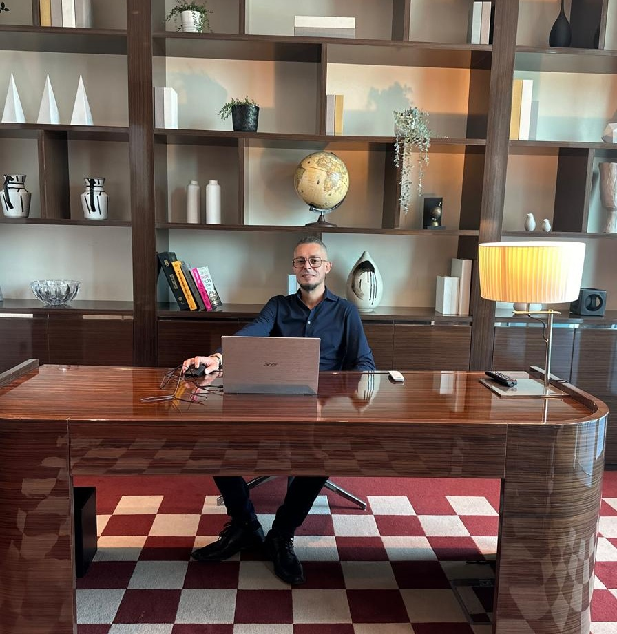
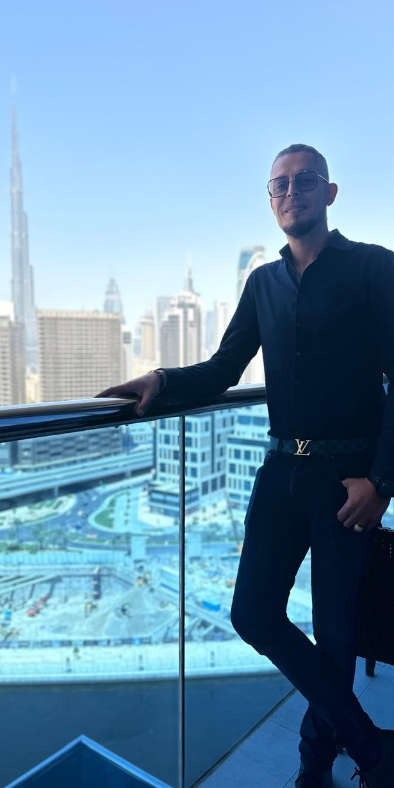

Firas Baklouti
Firas BakloutiInternational engagements · 2013–2026
Experience, seen in action.
A photographic record of international business development, industry events and cross-border relationships — from early European exhibitions to engagements across Asia, Africa and the Middle East.

Japan–Lithuania business engagement
Representing the business in Japan during the Expo 2025 Osaka programme and engaging with Japanese business representatives.
Public event record ↗Speaking, representation & recognition
Selected original photographs from the executive archive.

Speaking engagement

On stage

Recognition

Japan engagement
European foundations
Three consecutive years at CeBIT in Hannover — a continuing presence in the European technology industry.

CeBIT · European business

CeBIT · Industry relationships

CeBIT · International development
International event archive
Real photographs from exhibitions and business events across multiple markets.

IoT India Expo

GITEX Global

Ruptela Day

LEAP

ITS World Congress

Africa Rail

GITEX Technology Week

GITEX Technology Week

AfricaCom
Additional photographs from the 2026 Uffiverse speaking engagement, the Japan–Lithuania forum and the Lithuanian Ambassador’s Dubai visit have been selected for the next archive update; they are not yet stored in the website’s image repository.